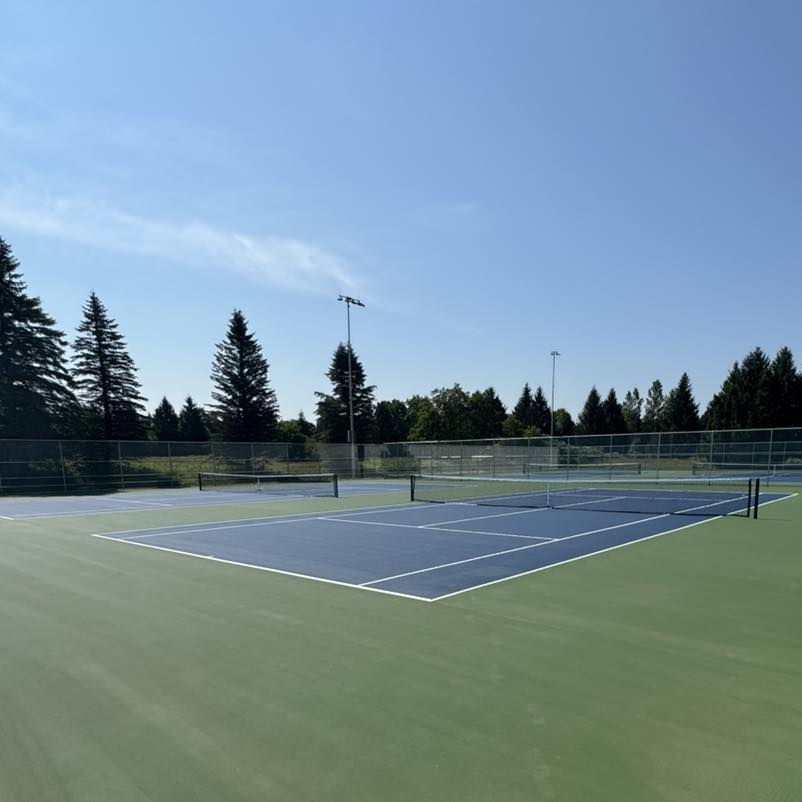

🎾 About Us
We are the Tennis Club of Uxbridge, Ontario, Canada! We are a volunteer, member-operated recreational local tennis club, here to support fair play in a fun sport environment. Come play with us.
We offer a Monday and Wednesday night league, organized drop-in matches, tournaments, skills development and a WhatsApp tennis group.
The UTC is a member of the Ontario Tennis Association (OTA).
- President
- Denis Peyregatt
- Vice President
- Cathy Jackson
- Vice President/Secretary
- Melanie Thornber
- Treasurer
- Kim Reid
- Membership
- Lucy Valleau
- Facilities/Website
- Hanno Rein
- Social Media
- Dan Jackson
🎾 Membership
Membership includes participation in all planned events, priority use of the tennis courts during club hours (when no club events are scheduled), and two cans of balls. Membership runs from May to November. The membership fees for 2026 will be posted here once the season opens.
- Adult
- $140.00
- Adult Couple
(2 adults living at the same address) - $250.00
- Junior
(up to 17 years old) - $45.00
If you would like to join the Uxbridge Tennis Club, please complete the membership registration form and return to the Uxbridge Tennis Club via email at admin@uxbridgetennisclub.com. You may also print the form and return it to a member of the executive team.
🎾 League Play
Mixed Doubles Ladder, all ages
Times
Mondays 6:00-7:30 courts (5, 6, 7, 8)
Mondays 7:30-9:00 courts (1, 2, 3, 4)
Signup
Send an e-mail at the beginning of the season to admin@uxbridgetennisclub.com.
Match format
Each player will play 3 sets of seven games. After each set players will switch partners and play with each of the other three players on the court. At the end of the match each player will add up the points they won in each set.
Details
At the beginning of the season the first 32 players to sign up will be ranked and assigned to one of the 8 courts. Other players that sign up after the first 32 will also be ranked and assigned to a court to fill spots that are available if any of the first 32 players are not available on the first Monday.
At the end of the match players will be ranked from 1 to 4 based on the number of points they won. If there is a tie the player that was ranked higher at the beginning of the match will be ranked higher than the player, they are tied with. Scores must be submitted to the WhatsApp “Monday Ladder Group” at the end of the match.
The player ranked the highest (1) will move up to the next court (ie. court 5 to court 4). The player ranked the lowest (4) will move down one court (ie. court 6 to court 7). The objective would be to progress from court 8 to court 1 throughout the season. The season champion will be the player that spends the most weeks as the top ranked player on court 1.
Each week players that cannot play the following Monday will be required to send a WhatsApp message to the “Monday Ladder Group” by Tuesday at 9:00 pm. Players that were not assigned to a court that week, will sign up to play the following Monday. The Club will send an email with the final schedule before the end of the week. If there aren’t 32 players signed up to play, a player that is already playing on a court can sign up to play in the other time slot, if they wish to play 2 matches that night and players are needed to ensure there are 4 players on all courts.
Mixed Doubles, all ages
Times
Wednesdays 5:00-6:30
Wednesdays 6:30-8:00
Wednesdays 8:00-9:30
Signup
Send an email every week to admin@uxbridgetennisclub.com by 11:00pm on Friday.
Players will sign up for Time Slot 1 (5:00-6:30 and 6:30-8:00) OR Time Slot 2 (6:30-8:00 and 8:00-9:30). When signing up players must be available to play at either time within the Time Slot. Players will indicate their time “preference” in the email and all efforts will be made to accommodate the request, but matches will be scheduled based on the results of the weekly sign-up.
Match format
Each player will play 3 sets of seven games. After each set players will switch partners and play with each of the other three players on the court. At the end of the match each player will add up the points they won in each set.
🎾 Upcoming Events
The courts are now open for the 2026 season.
We expect to start league play by May 11th the latest.
Dates for other events such as tournaments and camps will be posted here once available.
🎾 Bylaws and Code of Conduct
🎾 Facilities
The club uses the four brand new (installed in 2025) hard surface tennis courts at the Fields of Uxbridge.
The courts are reserved for our members during the times indicated below:
- Monday
- 6:00 am to 10:00 pm
- Tuesday
- 6:00 am to 1:00 pm
- Wednesday
- 1:00 pm to 10:00 pm
- Thursday
- 6:00 am to 1:00 pm
- Friday
- 6:00 am to 10:00 pm
- Saturday
- 6:00 am to 1:00 pm

🎾 Contact Us
Do you have any questions about the Uxbridge Tennis Club? Contact us at admin@uxbridgetennisclub.com.